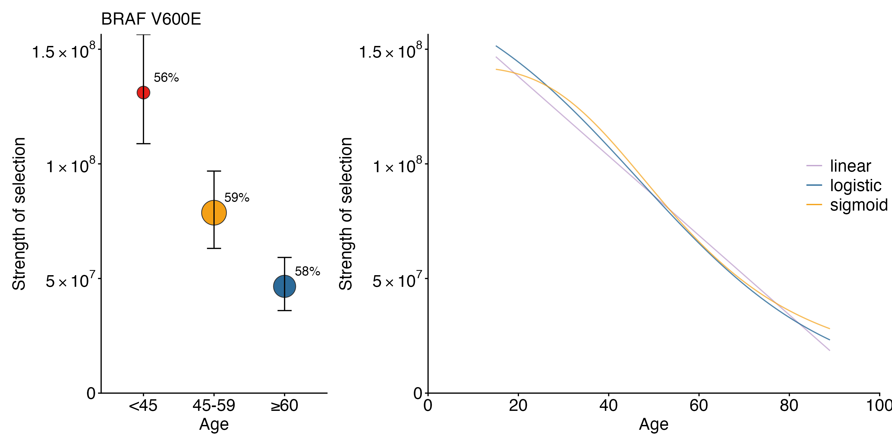
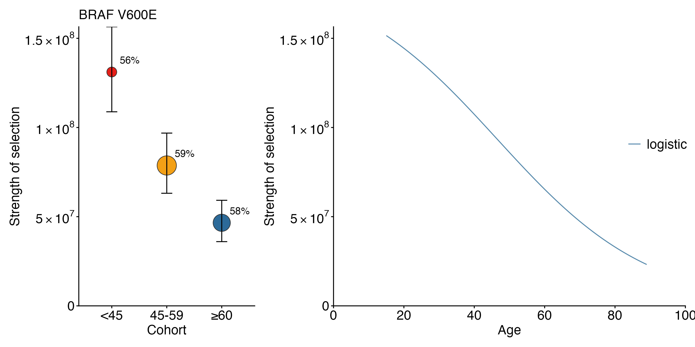

Continuous covariate selection
Source:vignettes/continuous_covariate_selection.Rmd
continuous_covariate_selection.RmdOverview
This tutorial demonstrates continuous-covariate selection inference
in cancereffectsizeR using patient age in TCGA thyroid
carcinoma (THCA) as an example.
We first estimate mutation rates and conventional cohort-specific selection estimates, then fit three continuous models for the strength of selection:
\text{Linear:}\qquad \gamma(a) = \beta_0 + \beta_1 a,
\text{Logistic:}\qquad \gamma(a) = \frac{\exp(L)} {1 + \exp[-k(a-m)]},
and
\text{Generalized sigmoid:}\qquad \gamma(a) = \exp(C) + [\exp(L)-\exp(C)] \frac{a^s}{a^s+m^s}.
The three models have 2, 3, and 4 fitted parameters, respectively. Their relative fits can therefore be compared using the Akaike Information Criterion (AIC).
Load packages
library(cancereffectsizeR)
library(ces.refset.hg38)
library(data.table)Load the packaged TCGA-THCA data
The example data are distributed with cancereffectsizeR
as a frozen, preprocessed TCGA-THCA data set.
maf_file <- system.file(
"continuous_selection_tutorial/TCGA_THCA_age.maf.gz",
package = "cancereffectsizeR"
)
clinical_file <- system.file(
"continuous_selection_tutorial/TCGA_THCA_age_clinical.txt",
package = "cancereffectsizeR"
)
if (maf_file == "" || clinical_file == "") {
stop("TCGA-THCA tutorial data were not found in the installed package.")
}Load the clinical table.
TCGA_sample <- fread(clinical_file)The packaged clinical table contains:
Unique_Patient_Identifier
AGE_AT_SEQ_REPORTDefine the three age groups used for the cohort analysis.
TCGA_sample$Age_Group <- ifelse(
TCGA_sample$AGE_AT_SEQ_REPORT < 45,
"<45",
NA
)
TCGA_sample$Age_Group <- ifelse(
TCGA_sample$AGE_AT_SEQ_REPORT >= 45 &
TCGA_sample$AGE_AT_SEQ_REPORT < 60,
"45-59",
TCGA_sample$Age_Group
)
TCGA_sample$Age_Group <- ifelse(
TCGA_sample$AGE_AT_SEQ_REPORT >= 60,
">=60",
TCGA_sample$Age_Group
)
TCGA_sample$Age_Group <- factor(
TCGA_sample$Age_Group,
levels = c("<45", "45-59", ">=60")
)
table(TCGA_sample$Age_Group)| Age group | Samples |
|---|---|
| <45 | 220 |
| 45-59 | 153 |
| >=60 | 115 |
Preload the MAF using the hg38 reference set. As in the melanoma analysis, hidden multinucleotide variants are detected during preprocessing.
TCGA_maf <- preload_maf(
maf = maf_file, refset = "ces.refset.hg38",
detect_hidden_mnv = TRUE
)Create the CESAnalysis
Create a new CESAnalysis, load the TCGA-THCA whole-exome
MAF, and then add the clinical data.
cesa <- CESAnalysis(refset = "ces.refset.hg38")
cesa <- load_maf(
cesa = cesa, maf = TCGA_maf, maf_name = "TCGA_THCA",
coverage = "exome"
)
cesa <- load_sample_data(cesa, TCGA_sample)Estimate trinucleotide mutation rates
Estimate sample-specific trinucleotide mutation rates using the COSMIC v3.4 signature set. For this thyroid carcinoma example, use the suggested THCA signature exclusions.
signature_exclusions <- suggest_cosmic_signature_exclusions(cancer_type = "THCA")
cesa <- trinuc_mutation_rates(cesa,
signature_set = ces.refset.hg38$signatures$COSMIC_v3.4,
signature_exclusions = signature_exclusions
)Estimate age-group-specific gene mutation rates
Neutral gene mutation rates are estimated separately in the three age groups using the THCA covariates.
sample_1 <- cesa$samples[Age_Group == "<45"]
sample_2 <- cesa$samples[Age_Group == "45-59"]
sample_3 <- cesa$samples[Age_Group == ">=60"]For this tutorial, we use BRAF V600E as an example variant, which is highly recurrent in TCGA-THCA.
example_variant_names <- c("BRAF V600E")
example_variant_ids <- cesa$variants[variant_name %in% example_variant_names, variant_id]
variants_to_use <- select_variants(cesa, variant_ids = example_variant_ids)Estimate a neutral gene mutation rate for each age group, followed by the corresponding cohort-specific selection estimate.
cesa <- gene_mutation_rates(cesa,
samples = sample_1,
covariates = ces.refset.hg38$covariates$THCA
)
cesa <- ces_variant(
cesa = cesa, variants = variants_to_use,
samples = sample_1, run_name = "small"
)
cesa <- gene_mutation_rates(cesa,
samples = sample_2,
covariates = ces.refset.hg38$covariates$THCA
)
cesa <- ces_variant(
cesa = cesa, variants = variants_to_use,
samples = sample_2, run_name = "medium"
)
cesa <- gene_mutation_rates(cesa,
samples = sample_3,
covariates = ces.refset.hg38$covariates$THCA
)
cesa <- ces_variant(
cesa = cesa, variants = variants_to_use,
samples = sample_3, run_name = "large"
)The three cohort-specific estimates are now available as:
cesa$selection$small
cesa$selection$medium
cesa$selection$large| Age group | Selection intensity | Lower 95% CI | Upper 95% CI |
|---|---|---|---|
| <45 | 131096295 | 108802498 | 156442901 |
| 45-59 | 78699047 | 63125854 | 96857877 |
| >=60 | 46573360 | 36007116 | 59181679 |
Prepare the continuous covariate
The continuous-model likelihood functions require a
data.table containing the sample identifier and a numeric
covariate_value.
Here the continuous covariate is patient age.
covariate_data <- cesa$samples[, c("Unique_Patient_Identifier", "AGE_AT_SEQ_REPORT")]
setnames(covariate_data, c("Unique_Patient_Identifier", "covariate_value"))
lik_args <- list(covariate_data = covariate_data)The same interface can be used for other continuous sample-level
covariates by placing their numeric values in
covariate_value.
Fit the linear model
Fit
\gamma(a) = \beta_0 + \beta_1 a.
The fitted selection intensity is constrained to remain positive over the observed covariate range.
cesa <- ces_variant_linear(
cesa = cesa,
variants = variants_to_use,
model = sswm_age_lik,
lik_args = lik_args,
run_name = "linear",
optimizer = "ISRES"
)The result contains the fitted parameters beta0 and
beta1 together with the maximized log-likelihood.
Fit the logistic model
Fit
\gamma(a) = \frac{\exp(L)} {1 + \exp[-k(a-m)]}.
Here exp(L) is the upper asymptote, k
controls the growth or decay rate, and m is the covariate
value at the midpoint of the transition.
cesa <- ces_variant_logistic(
cesa = cesa,
variants = variants_to_use,
model = sswm_age_lik_logistic,
lik_args = lik_args,
run_name = "logistic",
optimizer = "bbmle"
)Fit the generalized sigmoid model
Fit
\gamma(a) = \exp(C) + [\exp(L)-\exp(C)] \frac{a^s}{a^s+m^s}.
Here exp(C) and exp(L) are the lower and
upper asymptotes, s controls the shape of the transition,
and m is the covariate value at which the fitted selection
intensity is halfway between the two asymptotes.
cesa <- ces_variant_sigmoid(
cesa = cesa,
variants = variants_to_use,
model = sswm_age_lik_sigmoid,
lik_args = lik_args,
run_name = "sigmoid",
optimizer = "ISRES"
)Compare the three models by AIC
For each model,
\mathrm{AIC} = -2\ell_{\max} + 2p,
where p=2, 3, and 4 for the linear, logistic, and generalized sigmoid models, respectively.
aic_results <- data.table(
model = c("linear", "logistic", "sigmoid"),
loglikelihood = c(
cesa$selection$linear[variant_id %in% example_variant_ids, loglikelihood],
cesa$selection$logistic[variant_id %in% example_variant_ids, loglikelihood],
cesa$selection$sigmoid[variant_id %in% example_variant_ids, loglikelihood]
),
n_parameters = c(2, 3, 4)
)
aic_results[, AIC := -2 * loglikelihood + 2 * n_parameters]
aic_results[order(AIC)]| Model | Log-likelihood | Number of parameters | AIC |
|---|---|---|---|
| logistic | -347.076 | 3 | 700.153 |
| linear | -348.184 | 2 | 700.367 |
| sigmoid | -346.196 | 4 | 700.392 |
The model with the smallest AIC has the strongest relative support among the three candidate continuous models for the same variant and samples.
Plot cohort and continuous estimates together
plot_effects_continuous() can display the
cohort-specific point estimates beside the continuous fits.
Define the cohort run names and their display labels:
cohort_runs <- c("<45" = "small", "45-59" = "medium", "\u226560" = "large")To show all three continuous fits:
p_all <- plot_effects_continuous(
cesa,
cohort_run_names = cohort_runs,
linear_run_name = "linear",
logistic_run_name = "logistic",
sigmoid_run_name = "sigmoid",
variants = "BRAF V600E",
covariate_col = "AGE_AT_SEQ_REPORT",
output = "cohort_continuous",
continuous_models = "all",
x_title = "Age",
cohort_x_title = "Age"
)
p_all
Plot the AIC-best continuous model
The plotting function can calculate AIC internally and display only the best-fitting model.
p_best <- plot_effects_continuous(
cesa,
cohort_run_names = cohort_runs,
linear_run_name = "linear",
logistic_run_name = "logistic",
sigmoid_run_name = "sigmoid",
variants = "BRAF V600E",
covariate_col = "AGE_AT_SEQ_REPORT",
output = "cohort_continuous",
continuous_models = "best",
x_title = "Age"
)
p_best
attr(p_best, "best_model")
attr(p_best, "AIC")
Confidence intervals
Code for the likelihood-ratio confidence-region analyses used in the
melanoma age study is available in the melanoma-age
repository, including the age_melanoma_Step2_continuousmodel_cleaned.R
analysis script.